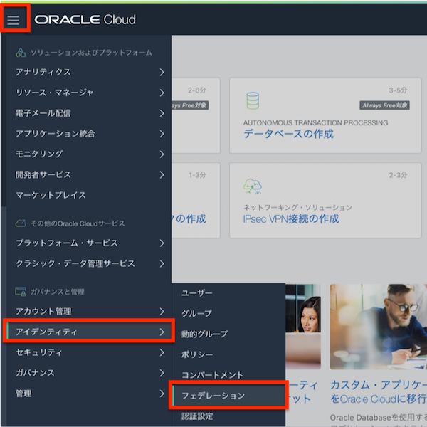
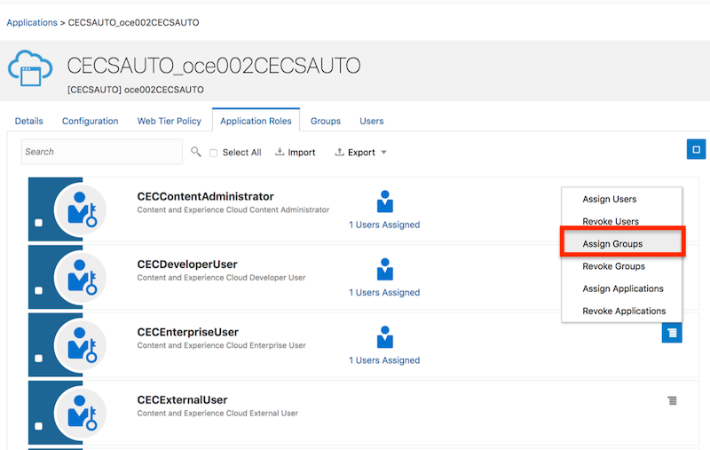

この文書は Oracle Content and Experience (OCE) を利用するユーザーをIDCSに追加する方法をステップ・バイ・ステップで紹介するチュートリアルです。
この文書は、2021年1月時点での最新バージョン(21.1.1)を元に作成されてます
前提条件
1. ユーザーとグループの作成
OCE インスタンスを利用するユーザーは、IDCS ユーザー として登録します。ここでは、IDCS ユーザーに IDCS グループを利用し、OCE インスタンスのアプリケーションロール(CECEnterpriseUser)を割り当てる手順を説明します

IDCS グループは、組織内の役割にあわせて作成します。下記マニュアルを参考に作成します。
-
Administrating Oracle Content and Experience
-
一般的な組織ロール（日本語翻訳版）
1.1 IDCS グループの作成
IDCS グループを作成します。ここでは OCEusers グループを作成します
-
OCI コンソールを開き、左上のメニュー→ 「アイデンティティ」→「フェデレーション」 をクリックします

-
Oracle Identity Cloud Service Console の URL をクリックします

-
IDCS コンソールが開きます。左上のメニュー→ 「グループ」 をクリックします

-
「+ 追加」 をクリックします

-
「名前」 と 「説明」 を入力し、「終了」 をクリックします（ここでは OCEusers を作成）

-
IDCS グループの作成が完了しました
1.2 IDCS グループを OCE インスタンスのアプリケーションロールに割り当て
IDCSグループにOCEインスタンスのアプリケーションロールを割り当てます。ここでは CECEnterpriseUser を割り当てます。
CECEnterpriseUser ロールで利用できる機能については、以下のマニュアルの Enterprise User をご確認ください
IDCSグループ単位でアプリケーションロールを割り当てることで、ユーザーの追加/削除/割り当て権限の変更を簡単にします
-
IDCS コンソールの左メニューの 「Oracle Cloud Services」 をクリックします

-
検索窓に 「CECS」 と入力し、検索を実行します。先ほど作成した OCE インスタンスをクリックします

-
「アプリケーションロール」 タブをクリックします

-
CECEnterpriseUser のメニューをクリック→ 「割当て済グループ」 をクリックします

-
前の手順で作成した IDCS グループ（ここでは OCEusers）を選択し、「OK」 をクリックします

-
CECEnterpriseUser に IDCS グループが割り当てられたことを確認します
1.3 IDCS ユーザーの作成
新規IDCSユーザーを作成します。IDCSユーザー作成時に、IDCSグループの割り当ても同時に実施することで、新規IDCSユーザーは登録直後からOCEインスタンスの利用が可能になります
-
IDCS コンソールの左メニューの 「ユーザー」 をクリックします

-
「+ 追加」 をクリックします

-
追加するユーザーの 「名」「姓」「ユーザー名/電子メール」 を入力し、「次」 をクリックします

-
前の手順で CECEnterpriseUser アプリケーションロールに割り当てた IDCS グループ（ここでは OCEusers）を選択し、「終了」 をクリックします

-
新規 IDCS ユーザーの作成が完了します。作成したIDCSユーザーに対してメールが送信されます。仮パスワードを利用し、OCEインスタンスにサインインします。この時にパスワードの再設定します
[TIPS] 通知メールを日本語で送信する方法
ユーザー作成時に通知されるメールは、通常は英語です。ここでは、その通知メールを 日本語 に変更する手順を紹介します
-
IDCSグループ（ここではOCEusers）を作成する
-
IDCSユーザーを作成する。ただし、ここでは IDCSグループを選択しない
-
作成したIDCSユーザーの「詳細」を開き、優先言語（Preferred Language） で 「日本語（Japanese）」 を設定し、保存する

-
「グループ」メニューよりユーザーを追加するIDCSグループ（ここではOCEusers）を開き、IDCSユーザーを割り当てます

-
日本語の通知メールがユーザーに送信されます

以上でこのチュートリアルは終了です。